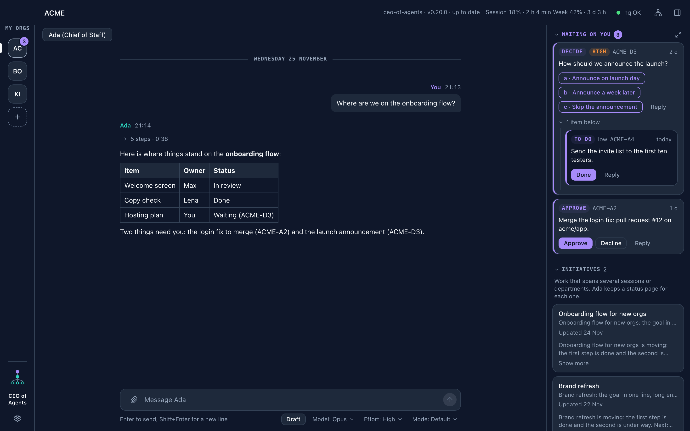
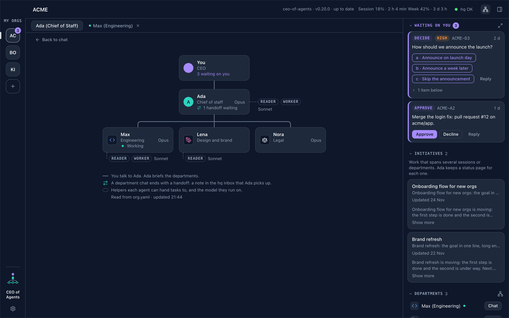
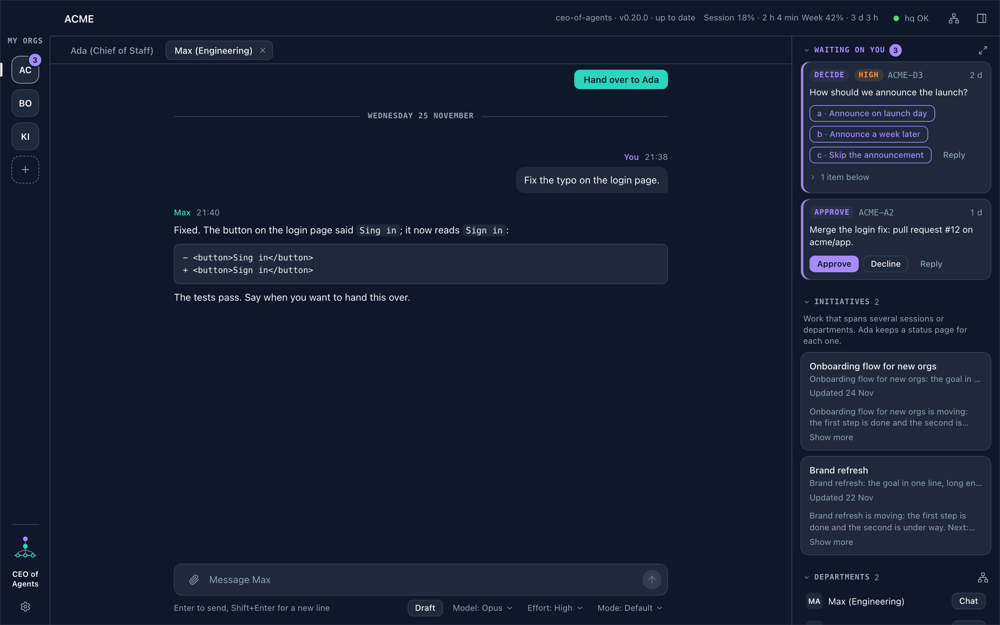
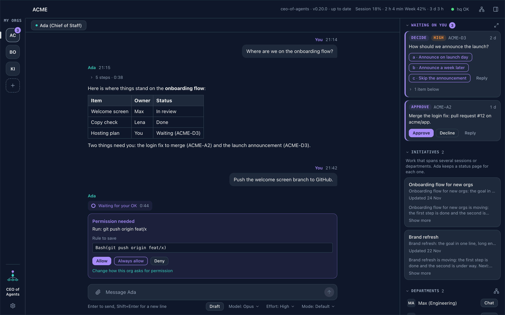
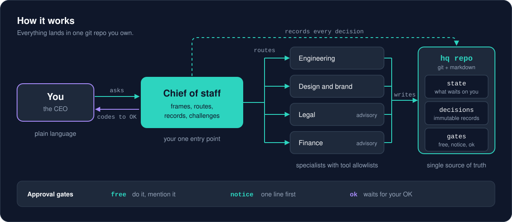

Claude Code plugin · Mac app
You're the CEO. Your agents are the company.
A chief of staff and departments that work from one git repo you own, and ask your OK before anything important.
macOS (Apple silicon) · free and open source · needs Claude Code, signed in
The app opens an hq made with the plugin: no hq yet? Start with the plugin.

What it does
- A chief of staff you talk to: say what you need in plain language; it frames it, routes it and tells you what waits on you.
- Departments that do the work: engineering, design, growth or your own; you pick them, name them and decide how they work.
- Nothing important without your OK: merging, publishing, spending money, contacting people; each one waits for you with a short code.
- One git repo you own: every decision, plan and number is written down in your hq, so nothing gets lost between sessions.
Get started
1. The Claude Code plugin
Works in the Claude Code terminal, desktop app or IDE extension. Open an empty folder for your hq in Claude Code and run these one at a time:
/plugin marketplace add ceo-of-agents/ceo-of-agents-core/plugin install ceo-of-agents@ceo-of-agentsWhen asked where to install, pick project scope.
/ceo-of-agents:init-fleet2. The Mac app (optional)
The desktop app for ceo-of-agents: talk to your chief of staff, approve what waits on you and watch your departments work, in one window, on your own Claude Code. It never asks for a password or an API key, never reads your credentials and never calls the Claude API itself.
Opens an hq made with the plugin.
First open on macOS
The app is not notarized by Apple yet, so macOS blocks the first open of a downloaded copy: when macOS says "Not Opened", choose Done. Then open System Settings > Privacy & Security, scroll to Security and click Open Anyway next to "CEO of Agents". From then on it opens normally.
A chief of staff you talk to
Open a session and your chief of staff gives you a short status and what waits on you. Ask for anything in plain language: it turns the ask into a decision, a task for a department or a note, and writes it down.
One thread with your chief of staff that keeps going across days, in the app or in Claude Code.
Departments that do the work


Each department has its own charter and its own tools. It does the work, then leaves a handoff for your chief of staff, so you read one summary instead of every step.
Department chats that run side by side and end with a handoff to your chief of staff.
Nothing important without your OK

Safe work, like drafts and research, just happens. Anything that goes outside or can't be undone waits for you: merging, publishing, spending money, contacting people. Each item has a short code, so you clear several at once: "Approve ACME-A2, ACME-A3."
Waiting on you: every approval and decision in one list. Approve, decline or pick an option in one click, with undo.
One git repo you own

Your hq is a git repo on your computer, and a private repo on GitHub if you want. Decisions, plans, briefs and numbers land there as commits, and every session starts from it, so nothing depends on a chat history.
hq health at a glance in the app: in sync, pushed, nothing left running.
What you need
- Claude Code on your computer, signed in with your own account.
- git, and a folder for your hq. A GitHub account if you want to keep the hq online as a private repo.
- For the app: a Mac, and the GitHub CLI (
gh), signed in, for in-app updates.
No servers, no extra API keys, nothing running in the background: it works only while you have a session open.